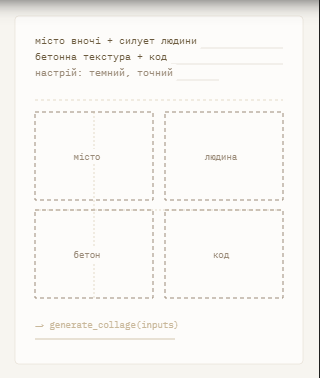

Зразок



Особливості
Google Gemini — Розумний дизайн та аналіз Сучасні інтелектуальні алгоритми нового покоління здатні в режимі реального часу проводити глибокий аналіз кожної деталі та технічних пропорцій завантажених вами фотографій. Завдяки цьому вони буквально за одну мить підбирають найбільш оптимальну та гармонійну дизайнерську сітку. Такий підхід гарантує, що абсолютно кожне обличчя, важлива емоція чи найменша значуща деталь на знімку залишаться неушкодженими й жодним чином не обріжуться під час кадрування композиції.
>ШІ філігранно працює з відступами, рамками та фокусом уваги, створюючи витончений журнальний стиль без перевантаження деталями. Кожен елемент композиції займає своє вивірене місце, формуючи ідеальний баланс між вільним простором та ключовими візуальними об'єктами. Завдяки такому підходу звичайний набір фотографій перетворюється на вишуканий цифровий артбук, який приковує погляд своєю лаконічною естетикою.
Цей ШІ здатний миттєво написати чистий код (HTML/CSS Grid або SVG) для створення інтерактивних та адаптивних колажів прямо на вашому сайті. Отриманий результат легко інтегрується у будь-яку сучасну веб-платформу та автоматично підлаштовується під екрани мобільних телефонів чи планшетів. Вам залишається лише скопіювати готові рядки, повністю оминувши тривалий і складний етап ручної верстки з нуля.
Результат